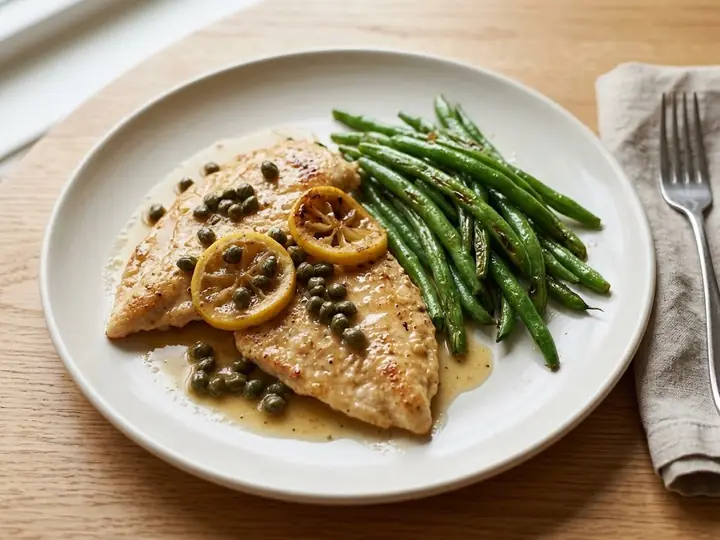

Lemon Chicken Piccata with Green Beans
A single portion of Italian cooking, ready in 18 minutes with 8 minutes of prep. Written for one, so there is nothing to halve and nothing to waste.
Method
- 1
Slice the chicken breast horizontally into two thin escalopes and dust lightly with flour.
- 2
Heat the olive oil in a frying pan over medium-high heat and fry the chicken for 3 minutes each side until golden and cooked through (75°C in the thickest part). Remove to a plate.
- 3
Add the butter, capers, stock and a squeeze of lemon to the pan, scraping up any bits, and simmer for 1–2 minutes until slightly thickened.
- 4
Meanwhile, cook the green beans in boiling water for 4–5 minutes until just tender.
- 5
Season to taste, then spoon the caper sauce over the chicken and serve with the green beans.
Cook's notes
- Sizes. Vegetables, fruit and eggs are medium unless the recipe says otherwise. A tin is a standard 400g tin.
- Dairy. Salted or unsalted butter both work; with salted, go easy on any extra salt. Use full-fat soured cream, crème fraîche and yoghurt in anything hot, as low-fat versions split.
- Stock. A cube or pot made up as the packet says. Cubes are salty, so taste before adding more salt.
- Heat. Medium means a gentle sizzle, not spitting. High means the oil shimmers before the food goes in. A simmer is a few lazy bubbles, not a rolling boil. Leave the lid off unless the recipe says to cover.
- Pans. A small saucepan is about 16cm and a frying pan about 24cm. Sauces reduce faster in a wider pan, so go by how it looks rather than the clock.
- Doneness. Chicken and turkey should reach 75°C in the thickest part, pork 65 to 70°C, and beef steak 55°C for medium-rare. Rest steaks and chops for a few minutes before slicing.
- Finishing. Taste before serving. Most dishes want a pinch more salt, and a squeeze of lemon or a splash of vinegar lifts anything rich.
- Leftovers. Cool quickly, cover and keep in the fridge for up to 2 days, then reheat until piping hot. Cooked rice keeps for 1 day and should only be reheated once.
solosupper.co.uk/recipes/lemon-chicken-piccata-with-green-beans/